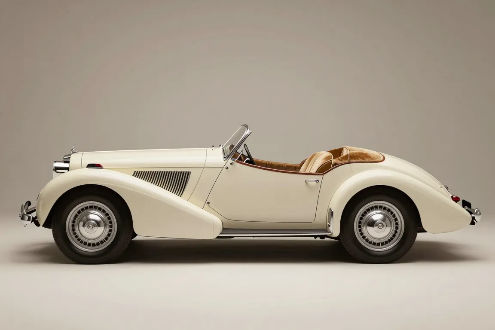

мода · 1933–1950 · также: Стримлайнер, Автомобиль стримлайн-модерн, Аэродинамический автомобиль
Автомобиль как капля. Гладкий округлый кузов со сливающимися с боками крыльями, скошенный хвост, наклонная решётка и хромовые полосы, показывающие скорость.

Главная идея
Быстрый автомобиль выглядит как капля воды: одна гладкая оболочка без разрыва линии, от решётки до хвоста.
Принципы дизайна
Округляйте нос и ставьте решётку с наклоном 10–20 градусов.
Сливайте крылья с кузовом, чтобы у бока была одна непрерывная кривая.
Скашивайте хвост длинным сужением или заканчивайте коротким фастбэком около 30 градусов.
Прячьте фары в крыльях или за решёткой и закрывайте заднее колесо юбкой.
Ведите две-три горизонтальные хромовые полосы вдоль кузова, чтобы показать скорость.
Делите лобовое стекло надвое и наклоняйте его назад на 25–30 градусов.
Отделывайте салон приборной панелью из бакелита и крашеного металла и мохеровой тканью на сиденьях.